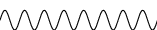
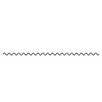
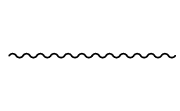
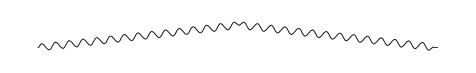

Photon¶
[1]:
from pyfeyn2.render.all import AllRender
ar = AllRender().demo_propagator("photon")
Pyx:

Tikz:

Feynmp:

Dot:

ASCIIPDF:
MPL:
---------------------------------------------------------------------------
KeyError Traceback (most recent call last)
Cell In[1], line 2
1 from pyfeyn2.render.all import AllRender
----> 2 ar = AllRender().demo_propagator("photon")
File ~/data/de.neuwirthinformatik.Alexander/Development/git/pyfeyn2/pyfeyn2/render/render.py:54, in Render.demo_propagator(self, d, show)
52 fd.legs.extend([l1, l2])
53 self.set_feynman_diagram(fd)
---> 54 self.render(show=show)
File ~/data/de.neuwirthinformatik.Alexander/Development/git/pyfeyn2/pyfeyn2/render/all.py:69, in AllRender.render(self, file, show, subfigure, resolution, width, height)
67 ASCIIPDFRender(fd).render(dirpath + "/asciipdf.pdf", **dynarg)
68 if not subfigure: print("MPL:")
---> 69 MPLRender(fd).render(dirpath + "/mpl.pdf", **dynarg)
70 plt.close()
72 with self.create(Figure(position="h!")) as kittens:
File ~/data/de.neuwirthinformatik.Alexander/Development/git/pyfeyn2/pyfeyn2/render/mpl.py:76, in MPLRender.render(self, file, show, width, height, resolution)
74 for l in self.fd.legs:
75 if l.sense == "incoming":
---> 76 namedlines[l.type](idtopos[l.id], idtopos[l.target])
77 elif l.sense == "outgoing":
78 namedlines[l.type](idtopos[l.target], idtopos[l.id])
KeyError: 'photon'